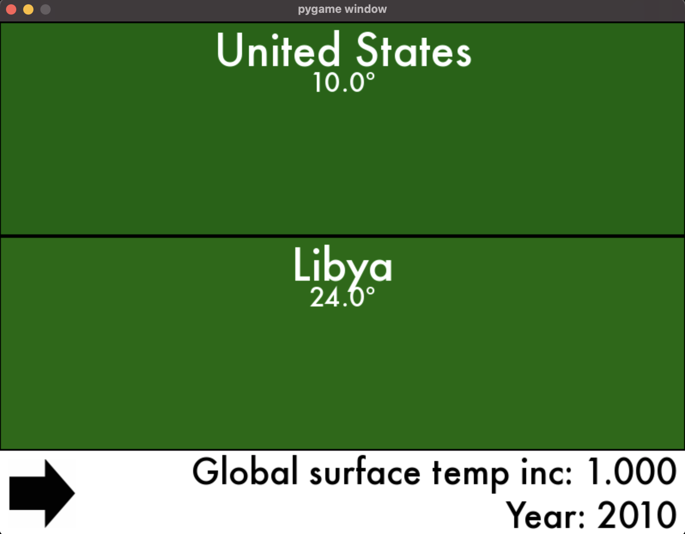

Project 2: Climate Simulator
Design Checks: October 9th – October 16th
Design Check due: October 18th 9:00 PM ET
Implementation: October 22th 9:00 PM ET
Note: This project is to be completed with a partner. You are encouraged to work with different partners for each project. You will be assigned a partner by October 11th. Both partners must be present at the Design Check meeting.
This project aims to build a simplified climate simulator for Earth to predict potential climate changes based on various factors. While our simulation is somewhat simplified compared to real models, it’s designed to balance realism with the programming skills you’ve learned so far in the course. We recommend you read through the entire project description before starting to get a sense of the scope and requirements!
Background
Environmental scientists have determined a near-linear relationship between tonnes of carbon dioxide (CO2) and global surface temperature increases. In other words, the more CO2 we produce, the hotter our globe will be. Based on the most recent work from the Intergovernmental Panel on Climate Change (IPCC), if global temperatures increase 3.0°C from pre-industrial levels, global catastrophes like droughts, peak biodiversity losses, and extreme temperature changes will continue to unravel and exacerbate all across the world. To read more about the adverse impacts of rising global temperature levels, see the report.
By building a graphical simulator, we can see how much various countries contribute to global warming over time. We will also be implementing various policies that will impact how much CO2 a country emits.
The simulator will primarly be based on these two figures from the IPCC:

This first image represents the linear relationship between carbon emitted over time and global surface temperature increases.

This second image demonstrates that the climbing global temperatures will carry disproportionate impacts on local regions across the globe.
Setup
The project includes several components: the simulator (which you will write), the country policies (which you will write), and the display (which is provided to you).
-
display.pyis the graphical display that runs the simulator and presents a graphical portrayal of Earth. We’ve provided this for you; you shouldn’t need to do any work to use this. -
simulator.pyis the engine that simulates the process of time on Earth. It tracks the countries on Earth and their policies, the amount of CO2 in the atmosphere, the current year, and computes global temperatures. You will implement the simulator. -
policies.pyare the country policies that you will implement. Each of these classes will need to implement methods for the simulator to call in order to determine a country’s emissions. -
test_mocking.py,test_simulator.pyandtest_policies.pyare the test files for the simulator and policies, respectively. You should write tests for each of the methods you implement in these files.
Project Roadmap
As you work through this project, you will need to complete the following tasks:
- Read through this document in its entirety.
- Setup: Download the project’s stencil code from the link above.
- Design Check: Complete the Design Check questions due by October 18th at 10:00 PM ET.
- Implement the country policies.
- Implement the simulator.
- Write tests for your simulator and policies.
Note: Refer to the course design recipe and apply it to your functions.
Project Component Details
Part 1: The Display
The display is implemented for you in display.py. It has one button: the step button, which calls advance_year once. The rest of the interface displays the countries and temperatures reported by the simulator, as well as the current year.
You can run the display by running python3 main.py in your VSCode terminal. If that doesn’t work, try using python main.py instead. This initializes the display, the simulator, and two policies that have been hardcoded (you will need to change this as part of the assignment!).

As you’re working with all these different modules, keep in mind the way they depend on each other:
- The main module creates the simulator and populates it with countries and strategies, then starts up the display on that simulator;
- The display invokes the simulator to discover how the world is changing over time; and
- The simulator invokes each country’s policy to discover how that country would react to the current global situation so that it can simulate the global situation appropriately.
Part 2: The Simulator
The simulator is implemented as a class Simulator in the simulator.py file. The simulator tracks the amount of cumulative carbon emissions (in gigatonnes, or, GtCO2) in the atmosphere and the average temperature of each country. The Display calls the Simulator’s advance_year function to simulate the passing of one year in time. The Display also calls the Simulator’s report function to generate a report of the countries on Earth and their current temperatures.
The Simulator class has some attributes that you will need to use in your implementation:
time: The current year of the simulation. The simulation starts in 2010.country_names: A list of the names of countries in the simulation.country_policies: A dictionary mapping country names to their policy objects.country_temperatures: A dictionary mapping country names to their current temperature.initial_country_temps: A dictionary mapping country names to their initial temperature in year 0.global_surface_temp_increase: The global surface temperature increase from the baseline.max_temperature_inc: The maximum global temperature increase allowed.cumulative_co2_emissions: The total cumulative CO2 emissions in the atmosphere.annual_co2_decrement: The amount by which atmospheric CO2 levels decrease per year.prior_emissions: A dictionary mapping country names to their prior year’s emissions.
The simulator has three methods:
add_country: This method is implemented for you in the stencil code. Theadd_countrymethod is called by the Main class. It adds a country’s name to the simulator’s country_names list. It also adds to thecountry_policiesdictionary, where the country’s name is the key and the relevant policy is the value. Finally, it adds to thecountry_temperaturesdictionary, where the country’s name is the key and the average_temp of that country is the value.-
advance_year: This method simulates the passing of one year in time. During the year, carbon is both emitted by countries and absorbed by natural processes. As a result of these emissions, the global and regional temperatures change. You will need to complete this method.For updating the temperature of each country, you will need to use the following equations:
- US:
y = 2x - China:
y = x - Colombia:
y = x + 1 - Libya:
y = 2x - United Kingdom/ EU:
y = 2x
Where
yindicates how much the temperature should increase from a given country’s baseline temperature (in year 0), andxdenotes the global surface temperature increase. The global temperature increase is calculated as0.0005times the cumulative CO2 emissions in the atmosphere.Sources for the equations
If you would like to better understand how these equations are informed or are interested in adding estimates for a different location, these resources should be helpful:
- Estimated rise in regional temperatures based on global temperatures
- Estimated rise in global temperatures based on cumulative carbon emissions
- Database used for carbon emissions of each country (per The World Bank)
- Database used for average regional temperatures of each country (per The World Bank)
- US:
report: This method generates a report for the graphical display to use. It is formatted as a list of dictionaries representing data for each country. The list should be in the same order as the simulator’s country_names list. Each dictionary should have two keys: “name”, the country’s name; and “temperature”, the country’s current temperature (in degrees C). You will need to complete this method.
Task 1: Navigate to the simulator.py file and understand the Simulator class and its methods. No need to make any changes yet, just familiarize yourself with the code.
Part 3: The Policies
The policies we want you to create are defined as stencil classes in policies.py. An informal description of each policy is:
Baselineemits the same amount of gigatonnes of carbon every year (i.e. the emissions remain constant).Reducingreduces emissions by a constant amount every year (1/2 a gigatonne), starting from year 1. Emissions cannot be reduced below 0.TaxEmissionsrepresents a policy where the government decides to tax corporations for their emissions, such that emissions reduce by 5% every year by what they were the previous year, starting from year 1. In year 0, the emission amount is thebaselineinput into_init_.Deforestationrepresents a policy that decreases the amount of trees in a country. As a result, carbon emissions increase by 3% every year by what they were the previous year, for 50 consecutive years. After the 50th year, the carbon emissions for that country remain constant.MatchLowestmatches the prior-year emissions of the lowest-emitting country in the simulation. Note that this requires access to elements of the simulation’s state. In year 0, the emission amount is thebaselineinput into_init_since there is no history available at the beginning of the simulation.
Task 2: Navigate to the policies.py file and understand the policy classes. No need to make any changes yet, just familiarize yourself with the code.
Section 5: Design Check
For the design check, you should submit a README.txt file with blocked out comments answering the following questions:
- Suppose United States has adopted the TaxEmissions policy (where emissions are reduced by 5% each year by what they were the previous year). The baseline (year0) CO2 emissions for the U.S. is 6.5Gt and the cumulative CO2 emissions for year0 is 2300Gt. The baseline (year0) temperature for the U.S. is 10.0 degrees Celsius. Round your answers to three decimal places.
- A) Provide the year1 and year2 U.S. C02 emissions.
- B) Provide the year1 and year2 cumulative CO2 emissions, provided that other countries in the world have emitted 54Gt in year1 and 62Gt in year2. Take into account the amount of carbon absorbed by the atmosphere, which is 6Gt each year.
- C) Provide the year1 and year2 global surface temperature increases from baseline.
- D) Provide the year1 and year2 United States temperatures (see equations for
advance_year). Note that y in the equation will give you the temperature increase from baseline.
- What states will the simulator need to track? Be specific about the data structures you will use to track each piece of state. For example, how would you keep track of the temperatures for all countries?
- What parameters should the emit methods take? Why does each policy’s emit method need to take in the same arguments?
- What arguments should the
emitmethods take (there may be multiple correct answers)? Write at least oneemitmethod/function. - Think about the implementation of the simulator’s
advance_yearmethod, and write some helper functions in pseudocode that can assist with the computations you are making.
Section 6: Implementation
Part 1: The Policies
Task 3: Implement the policies in the policies.py file.
Each policy should have an __init__ method that takes in the baseline parameter, which represents the initial emissions rate. Each policy should also have an emit method that returns the number of emitted gigatonnes of carbon. You will need to track past emissions as part of some policy objects’ state. Think about how you can use principles of polymorphism to make the emit function take in the same arguments, while making sure each policy instance has access to the information it needs to compute the country’s emissions.
To understand how to implement the policies, you should refer to the informal descriptions of each policy in the Background section. You should also refer to the Simulator class in the simulator.py file to understand how the policies will be used.
Task 4: Write tests for the policies in test_policies.py.
Part 2: The Simulator
Task 5: Fill in the constant attributes in the Simulator class in simulator.py.
You will need to fill in the following attributes in the Simulator class:
max_temperature_inc: The global surface temperature increase should not go above this value.cumulative_co2_emissions: Tracks total CO2 emissions over time.annual_co2_decrement: Amount by which atmospheric CO2 levels decrease per year.
Task 6: Implement advance_year in simulator.py. Try to break down the problem into smaller parts and write helper functions to assist with the computations you are making.
In the advance_year method, you will need to:
- Calculate each country’s CO2 emissions from that year. You will need to call the
emitmethod from each country’s policy, passing in any necessary argument(s). Each country’s yearly emissions should be added to the cumulative CO2 of the atmosphere. - Reduce the amount of CO2 being absorbed by natural processes. The absorption of 6 GtCO2 represents a rough estimate and not an actual number, but we’ll use it for our simulation.
- Calculate the global surface temperature increase for that year. The global surface temperature increase can be calculated by examining the total cumulative carbon emission output:
- Global surface temperature increase starting value = 1 (from 1850 to 2010, see figure 1)
- Updated Global surface temperature increase = 0.0005 * cumulative CO2 emissions
- Calculate the updated temperature for each country. See the equations in the Background section for how to calculate the updated temperature for each country.
Task 7: Write tests for the advance_year method in test_simulator.py.
Your tests should be unit tests that test the advance_year method in the Simulator class. You should test the following:
- That the cumulative CO2 emissions are updated correctly.
- That the global surface temperature increase is calculated correctly.
- That the updated temperature for each country is calculated correctly.
Can you think of any edge cases that you should test for?
Task 8: Implement report in simulator.py. Write tests for this method in test_simulator.py.
Section 7: Testing
Until now, and in CS0111, you have been doing one kind of testing: unit testing of functions. Unit tests are a type of software testing that checks individual components, or units, of a program in isolation. For example, calling a single, specific method, such as advance_year, and testing its results, such as checking that simulator.time has been updated, would be deemed a unit test.
Part 1: Integration Testing and UI Testing
But what about the user interface (UI), the interactive component of the code, in the form of the simulator’s display? UIs are front-facing; when using a website or app, you interact with its UI. Compared to testing a function, testing UIs can be time-consuming because rather than just passing in an input and then examining the output, the tester must perform some UI manipulation (like clicking a button or moving the mouse) and then check that the expected effect has happened in the UI. If this is all done manually, it can be an enormous investment of time since every time you want to “run your tests,” you need to spend time using the application yourself. Instead, to save time, you can use automated testing, rather like what you’ve already done for testing functions.
A close connection to UI testing is integration testing. Integration testing focuses on combining multiple units of a program to validate that they work in collaboration–that their interactions are performed correctly.
Consider a scenario where all your unit tests for the policies, advance_year, report, etc., pass, but nothing happens when you run main and click on the step button. This indicates an integration problem - the components work individually but not together. Is the step button not triggering an advance_year call, or is the implementation of the display not responding even if advance_year is called, or something else entirely? Automated UI testing could discover this predicament.
Part 2: Mocking
When all you’re testing is functions in combination, this is often straightforward because you can just call the functions in succession and look at the final output. But in the UI testing scenario, we need a way to automate the interaction. To do that, we’ll use a technique called “mocking.” Mocking is a controlled way to emulate either data or the behavior of objects.
Check the test_mocking.py file to understand the mocking implementation.
Task 9: Correct the mock_event function in test_display.py to correctly change the environment. What should be the trigger for the step button?
Use this list of possible interactions: [KEYDOWN, KEYUP, MOUSEBUTTONUP, MOUSEBUTTONDOWN, MOUSEMOTION, QUIT]
Now, we have a way to interact with the display in a controlled way. What this funtion does is basically “press” the step button, which should trigger the advance_year method in the simulator.
Task 10: Write at least three tests to check that the mock_event correctly changes the environment. What should change when the step button is pressed? Write a comment above each test explaining how your tests check aspects of the UI and the program’s integration.
Part 3: Reflection on Testing Approaches
The simulator display was programmed using the Python library Pygame. In the mocked tests, we are simulating Pygame events or interactions. For instance, when you mock the Pygame event KEYDOWN, it only affects the Pygame window.
You don’t need Pygame to do this sort of scripted interaction, however. There are many testing libraries that let you take control of an application (later on in the semester, you’ll use software that effectively lets you automate actions in a web browser!) And you could even go further. For example, you could write a program that automatically controls your mouse and keyboard, allowing it to interact with any clickable buttons, applications, and more on your entire desktop—not just within Pygame!
In your README, address the following:
- What are your thoughts on the differences between these two different levels of mocking power: one that’s mocking inputs to Pygame only and another that can mock inputs to the computer itself?
- What potential dangers could arise from using automation that has the ability to “take control” of your desktop? Consider both malicious and accidental scenarios; be as concrete as you can!
- Contrast that to the potential dangers that could come from automating interactions with a specific application using Pygame.
Remember, when building software that other people will use, it’s crucial to consider potential unintended consequences and how to mitigate risks.
Section 8: Readme
Imagine augmenting your simulator to be a higher-accuracy, more realistic simulation for the actual climate and atmosphere on Earth. Detail the full process you’d take to create a more accurate model and the advantages/disadvantages of your design choices. Feel free to draw inspiration from similar simulations that exist. Address the following points in your README:
- Collecting data: what kind of data, where you’d source it from, assumptions/allowances you’d make, etc.
- Constructing the simulation: variables to include, testing methods, consultations with experts to check its accuracy, etc.
- Publicizing your work: how you will frame its purpose, the reactions of parties who may be affected, how it could be used in a positive or negative way, etc.
Emphasize the differences between a realistic simulation for Earth and the basic one that you implemented for this project. What ethical considerations must you take into account given the real impact that a widely-used simulation might have?
Section 9: Submission
Please follow the design and clarity guide–part of your grade will be for code style and clarity. Additionally, you should be adhering to the course design recipe. After completing the homework, you will submit:
README.txtsimulator.pytest_simulator.pypolicies.pytest_policies.pytest_mocking.py
Only one of your partners should submit the project on Gradescope. Make sure to add your partner as a Group Member on your Gradescope submission so that you both can see the submission. Please DO NOT write your partner’s name in the README when listing other collaborators’ cslogins.
If you are using late days, make sure to make a note of that in your README. Remember, you may only use a maximum of 3 late days per assignment, and both you and your partner must have late days to use them. If the assignment is late (and you do NOT have anymore late days) no credit will be given.